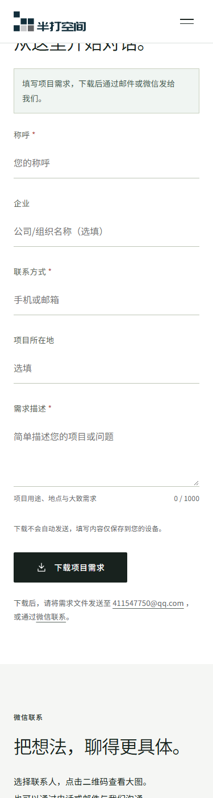
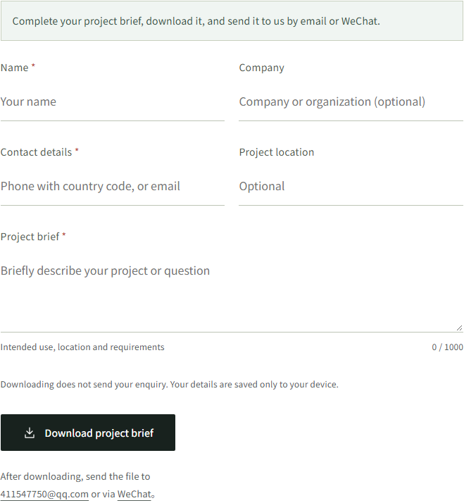

2026-10-10 · r30
对外文案修订完成
本轮文字验收通过。中英文同步清理内部制作、资料整理及待办说明，保留影响客户判断的范围和操作指引。
已修正
- 中英文表单改为填写、下载、发送的直接指引；下载不自动发送的说明与文件内提示保留
- 删除页脚备案占位、未发布政策常规入口、股权资料整理注释
- 六款产品参数和技术图改为客户说明，数值及面积计算范围保持不变
- 资质记录删除核对过程叙述，保留原权利人、历史授权状态和报告适用边界
- 案例、旧构件地址、招聘、新闻空态与搜索摘要统一为对外文案
- 同步更新英文和本地字体子集
本轮实测
48项单元测试、46项素材核对、代码检查与构建通过；类型检查0错误、0警告，保留4个既有测试类型提示。33个页面，346项图片引用检查通过，英文翻译残留0。
本地80项、公网80项文字与溢出检查通过；各完成2种语言的下载与校验流程、4组表单自动无障碍检查。未观察到脚本错误、资源请求错误或表单POST请求。公网33个HTML与本地构建完全一致。
初次测试遇到旧文案断言和新增测试脚本的根路径跳转时序问题；更新测试后完整复测通过，业务数值与行为断言保留。
页面复核


验收范围与交付限制
- 本轮浏览器为 Windows Edge/Chromium；375/1440覆盖33个生成页面，联系页覆盖320至2560共7档宽度；不是重新执行历史297项全站布局测试
- 无障碍为中英文联系页在375/1440的自动检查；照片等需要人工判断的项目未作为全面无障碍认证
- 未在本轮回归轮播、视频、案例阅图等未改变交互；历史结果仍在r29报告
- 政策正文尚未提供；旧地址不索引且真实说明未发布，不编造政策
- 未修改业务参数；半打8面积取整差异仍待原始资料确认
- 6S室内素材、新闻招聘空态及未接通的发送服务仍属原交付边界
- 仅本地独立分支提交，未推送GitHub
运行代码提交：7aba257；后续提交仅补充测试脚本与交付记录。r29容器保留回退。
中文联系页 · 英文联系页 · 完整验收记录